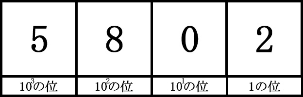
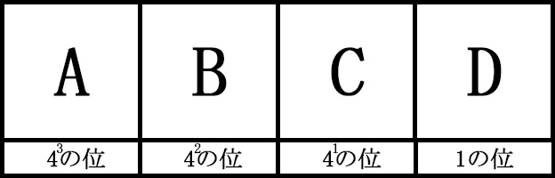
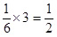
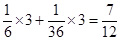

「くっ…今年だったか！ 常に時代の先を行ってしまうのも考えものだな」
ちょうど一年前のブログで二進法について触れた池村氏。今年のセンター試験にn進法の問題が出たということで残念がっているようで。
数の性質は学年にあまり関係なく取り組める
今年のセンター試験の問題を見ていたら、「数Ⅰ・数A」にて、n進法の問題が出題されていました。
私たちは生まれてからずっと「10進法」という位取り記数法を使っています。
つまり、‘10個目で桁が繰り上がる’ということに身も心もドップリ浸かっているので、例えば2進法のように‘2個目で桁が繰り上がる’ような数の数え方には慣れていません。
このように染みついた習慣と違う概念に触れることは、言わば利き手でない方の手で箸を持ち食事をする不慣れと似ていますよね。
（※2進法の基本性質はこちらを参照下さい。「my法則シリーズ～2015はそこそこﾌﾟﾚﾐｱﾑな数～」）
ウ～ン、センター試験で「2016年問題」は出ていないのは残念でしたが…。
まぁ気を取り直して、せっかくだからこの「n進法問題」を考えてみましょう。
数の性質に関する問題は、あまり学年に関係なく考えることができますから。
本質が解れば、何進法でもイケます
2進法で11011（2）と表される数を4進数で表すと（ ）（4）である。
次の（0）～（5）の6進数の小数うち、10進法で表すと有限小数として表せるのは、（ ）（ ）（ ）である。ただし、解答の順序は問わない。
（0）0.3（6） （1）0.4（6） （2）0.33（6） （3）0.43（6） （4）0.033（6） （5）0.043（6）
さて、10進法以外の数の表記を考えるためには何が必要でしょうか？
それは「10進法そのものの仕組みを理解すること」なのです。
そんなこと分かってます！ って言いたいですよね。
しかし、2進法や6進法に応用できないとすれば、それは深いところでの仕組みが理解できていないということになります。
ものすごく簡潔にまとめると、10進法の性質は以下の通りです。
例）4桁の場合

①0～9の「10種類」の数字を使う。
②ある位の大きさが「10」になると1桁繰り上がる。
③だから、1の位から始まって「10倍」になるごとに位が上がる。
④だから、各位の名前は「10の～乗の位」と表すことができる。
⑤よって、上記の場合は、「10³×5＋10²×8＋10¹×0＋1×2＝5802」となる。
このようにまとめてみると、ある法則が見えてきます。
すなわち、①～⑤のカッコ内にある「10」の部分を、2進法なら「2」、4進法なら「4」と置き換えればよいのです。
（※ただし、使う数字は、2進法なら「0～1」、4進法なら「0～3」となります）
では、最初の問いである「2進法の11011(2)を、4進法で表す」を考えてみます。
2進法の11011(2)を、ひとまず10進法に直してみると、
1×1＋2¹×1＋2²×0＋2³×1＋24×1＝27(10)です。
これを4進法に変換します。4進法の各位は以下のようになります。

ここで、10進法の「27」という大きさをつくるには、Aに0～3のどの数字を入れることができるでしょうか。
4³＝64なので、Aは「64の位の数」になりますから、ここに1を入れたらすでに27を超えてしまいます。
よって次の位から考えると、4²＝16なので、Bは「16の位の数」ですから、ここには2を入れると27を入れるとダメですが、1ならば大丈夫です。
なのでB＝1、残りは27－16＝11となります。
Cは「4の位の数」なので、ここには2を入れることができます。
よってC＝2、残りは11－4×2＝3となります。
最後のDは「1の位の数」なので、D＝3として終了です。
正解は『123』となります。
さらに小数への応用もイケます
次の問いは6進法の小数を扱うものです。
難しいように思えますが、そうでもありません。
小数第一位を「6分の1の位」、小数第二位を「6²分の1の位」として見ればよいのです。
（※なぜなら、10進法の小数第一位は「10分の1の位」、小数第二位は「10²分の1の位」だからです）

となり、これは「0.5(10)」ですから、有限小数です。また、例えば(2)の「0.33(6)」は

となり、これは「0.58333…(10)」ですから、無限小数です。（※これ以外にも、いったん小数を整数に直してから再変換する考え方もあります）
このように考えて、他の問題も考えてみて下さい。
正解は、『(0),(3),(5)』となります。
では、またいつかどこかで！